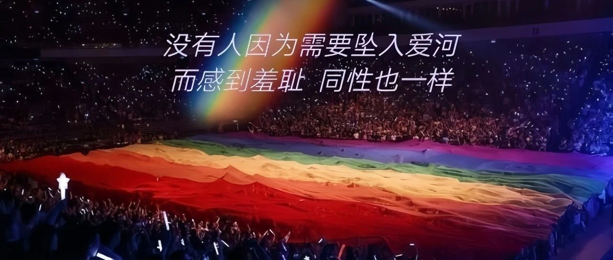

我出柜后，遭遇直男的恐同霸凌与性骚扰
编者荐语：
“直男舍友脱下裤子用他的生殖器蹭我的脸，并拍摄了视频。即使已经知道我是同性恋，还会故意在我面前说同性恋恶心……”
以下文章来源于彩虹制燥 ，作者登高Pride
彩虹制燥
.
彩虹制燥是国内第一家面向性与性别少数群体的乐迷组织，我们致力于为社群伙伴在Live现场提供一个温暖的家，并在这里收获到陪伴与支持。我们希望能影响更多人拥有多元的视野和行动的勇气，去探索更大的世界，向更多人传递自己的声音。

点击上方蓝字关注我们

愿我们都能拥抱自由！🌈

请勇敢做自己
引言：不管是一次冒着风险决定选择坚持小众的自我，还是在公开场合决定说出一个压在内心的秘密，无论是怎样的出柜，请你始终相信，我很棒，我非常勇敢。

来自HRC(Human Rights Campaign)的出柜指南
接纳自己

向Ta人出柜

叮嘱

🌈分享其它出柜的故事与指南🌈
一份写给「所有人」的「出柜指南」（点击链接或图片跳转）


🌈以下是关于彩虹制燥的介绍🌈

🌈彩虹制燥是一个什么样的组织？

彩虹制燥是国内第一家面向性与性别少数群体的乐迷组织，我们致力于为社群伙伴在Live现场提供一个温暖的家，并在这里收获到陪伴与支持。我们希望能影响更多性少数小伙伴拥有多元的视野和行动的勇气，去探索更大的世界，向更多人传递性少数的声音。

🌈如何加入彩虹制燥？

为保证性少数伙伴们的隐私，请添加工作人员微信，私信拉您进入彩燥活动群聊。